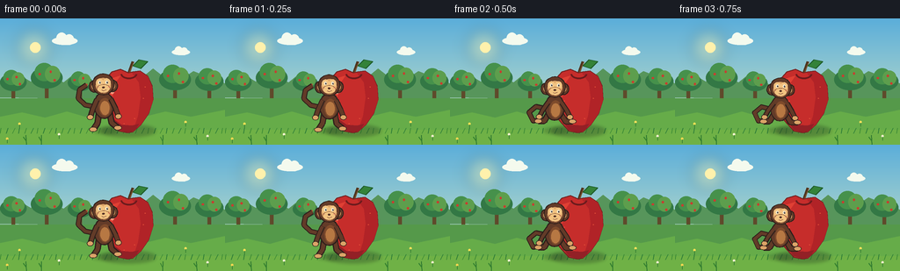
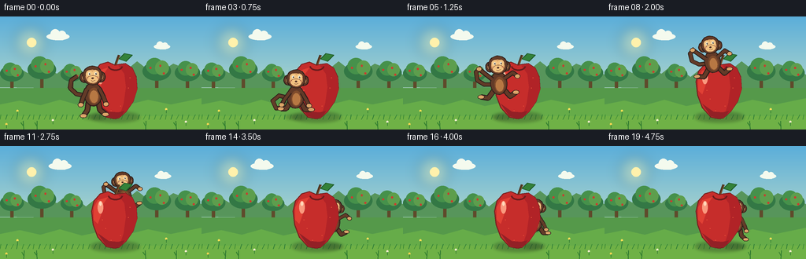
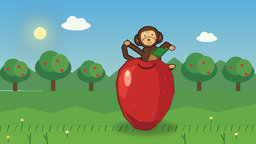
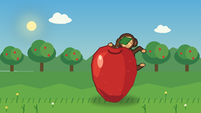

CODING AGENTS AS PIXEL WORLD MODELS
traex/GPT-5.6-Sol · dynamic_spatial_relationship_0062
点击播放 · 原生 RGB 像素
逐轮保存的候选
回放视频、检查图与代码变化。
每份候选均可单独播放。实际图片检查记录在下方工具轨迹中。
候选 01播放与检查图
点击播放 · 原生 RGB 像素


展开代码变化
--- 上一保存版本
+++ 本次保存版本
@@ -0,0 +1,240 @@
+from pathlib import Path
+import math
+import numpy as np
+from PIL import Image, ImageDraw, ImageFilter
+import artifact_io
+
+W, H, N = 256, 144, 20
+SS = 3
+
+def sc(v): return int(round(v * SS))
+def box(coords): return tuple(sc(v) for v in coords)
+
+def lerp(a,b,t): return a+(b-a)*t
+def ease(t):
+ t=max(0,min(1,t)); return t*t*(3-2*t)
+
+def ellipse_poly(cx,cy,rx,ry,n=36):
+ return [(cx+rx*math.cos(2*math.pi*k/n), cy+ry*math.sin(2*math.pi*k/n)) for k in range(n)]
+
+def poly(draw, pts, fill, outline=None, width=1):
+ pts2=[(sc(x),sc(y)) for x,y in pts]
+ draw.polygon(pts2, fill=fill)
+ if outline: draw.line(pts2+[pts2[0]],fill=outline,width=sc(width),joint='curve')
+
+def draw_background(im, frame):
+ d=ImageDraw.Draw(im)
+ # warm dawn sky gradient
+ top=np.array([91,174,218],float); bot=np.array([220,235,195],float)
+ arr=np.zeros((sc(H),sc(W),3),dtype=np.uint8)
+ for y in range(sc(H)):
+ yn=y/(sc(H)-1); c=top*(1-yn)+bot*yn
+ arr[y,:,:]=c.astype(np.uint8)
+ im.paste(Image.fromarray(arr,'RGB'))
+ d=ImageDraw.Draw(im)
+ # sun halo
+ halo=Image.new('RGBA',im.size,(0,0,0,0)); hd=ImageDraw.Draw(halo)
+ hd.ellipse(box((15,9,62,56)), fill=(255,229,133,22))
+ hd.ellipse(box((25,19,52,46)), fill=(255,239,162,90))
+ halo=halo.filter(ImageFilter.GaussianBlur(sc(7)))
+ im.paste(halo,(0,0),halo)
+ d=ImageDraw.Draw(im)
+ d.ellipse(box((34,27,46,39)),fill=(255,241,172))
+ # drifting tiny clouds
+ shift=(frame*0.24)%20
+ for cx,cy,s in [(74+shift,25,1),(206+shift*.45,38,.72)]:
+ col=(244,250,238)
+ d.ellipse(box((cx-15*s,cy-4*s,cx+14*s,cy+5*s)),fill=col)
+ d.ellipse(box((cx-10*s,cy-9*s,cx+2*s,cy+4*s)),fill=col)
+ d.ellipse(box((cx-1*s,cy-7*s,cx+10*s,cy+5*s)),fill=col)
+ # distant orchard ridge
+ poly(d,[(0,90),(0,72),(18,62),(35,72),(51,56),(72,73),(88,60),(109,77),(129,61),(151,76),(174,57),(197,75),(220,60),(256,74),(256,94)],(87,149,91))
+ # round tree crowns and trunks
+ for cx,cy,r in [(15,72,15),(53,67,18),(91,73,14),(199,69,18),(238,71,16)]:
+ d.rounded_rectangle(box((cx-2,cy+7,cx+2,111)),radius=sc(2),fill=(95,74,43))
+ d.ellipse(box((cx-r,cy-r*.65,cx+r,cy+r*.7)),fill=(51,120,69))
+ d.ellipse(box((cx-r*.75,cy-r*.9,cx+r*.45,cy+r*.25)),fill=(70,145,75))
+ d.ellipse(box((cx-r*.12,cy-r*.72,cx+r*.85,cy+r*.32)),fill=(93,158,77))
+ # distant apples
+ for ox,oy in [(-.45,-.2),(.25,-.35),(.5,.18)]:
+ d.ellipse(box((cx+ox*r-1.3,cy+oy*r-1.3,cx+ox*r+1.3,cy+oy*r+1.3)),fill=(201,61,48))
+ # meadow and near ground bands
+ d.rectangle(box((0,91,256,144)),fill=(85,153,74))
+ poly(d,[(0,112),(25,107),(51,113),(76,106),(104,114),(132,108),(160,113),(188,106),(217,112),(256,104),(256,144),(0,144)],(102,172,73))
+ d.rectangle(box((0,127,256,144)),fill=(111,177,70))
+ # grass blades / flowers
+ for k in range(0,256,7):
+ y=126+(k*13%13)
+ col=(47,126,56) if k%14 else (64,142,55)
+ d.line([(sc(k),sc(y+5)),(sc(k+1+(k%3)),sc(y-1))],fill=col,width=sc(1))
+ for x,y,c in [(22,120,(255,226,85)),(67,132,(245,244,207)),(211,118,(255,224,91)),(236,134,(244,238,205)),(8,137,(255,215,81))]:
+ d.ellipse(box((x-1.4,y-1.4,x+1.4,y+1.4)),fill=c)
+ d.line([(sc(x),sc(y+1)),(sc(x),sc(y+5))],fill=(44,116,49),width=sc(.7))
+
+def draw_shadow(im, cx, cy, rx, alpha=85):
+ lay=Image.new('RGBA',im.size,(0,0,0,0)); d=ImageDraw.Draw(lay)
+ d.ellipse(box((cx-rx,cy-rx*.22,cx+rx,cy+rx*.22)),fill=(39,66,37,alpha))
+ lay=lay.filter(ImageFilter.GaussianBlur(sc(2.1)))
+ im.paste(lay,(0,0),lay)
+
+def draw_apple(im):
+ d=ImageDraw.Draw(im)
+ # back leaf and stem
+ d.line([(sc(146),sc(63)),(sc(151),sc(49))],fill=(78,52,31),width=sc(3))
+ d.line([(sc(147),sc(62)),(sc(152),sc(50))],fill=(132,88,46),width=sc(1))
+ poly(d,[(151,54),(158,47),(168,49),(160,57)],(52,130,57),(31,93,43),1)
+ # apple silhouette, subtly asymmetric lobes
+ pts=[]
+ for k in range(64):
+ a=2*math.pi*k/64
+ # broad shoulders, tapered base
+ y=95+34*math.sin(a)
+ ry=(y-95)/34
+ half=28*(0.84+0.16*(1-ry))*math.sqrt(max(0,1-ry*ry))
+ x=146 + (half if math.cos(a)>=0 else -half)
+ pts.append((x,y))
+ # use bezier-like cleaner custom outline
+ pts=[(146,62),(137,58),(127,61),(119,70),(116,83),(118,100),(124,116),(135,128),(145,130),
+ (151,129),(160,121),(169,108),(174,92),(173,77),(168,66),(159,60),(151,61)]
+ poly(d,pts,(198,45,43),(119,34,33),1.3)
+ # warm right lobe and bottom shade
+ poly(d,[(150,62),(159,60),(168,66),(173,78),(174,93),(169,108),(160,121),(151,129),(157,111),(160,90),(158,73)],(177,35,39))
+ poly(d,[(124,111),(135,127),(146,130),(154,127),(158,120),(150,122),(138,121)],(147,32,38))
+ # left reflected light + highlight
+ poly(d,[(124,69),(119,78),(119,94),(124,99),(128,88),(130,75),(137,65)],(224,64,52))
+ d.ellipse(box((124,70,131,86)),fill=(250,153,126))
+ d.ellipse(box((126,70.5,129,76)),fill=(255,218,188))
+ # stem dimple
+ d.arc(box((137,57,156,69)),5,176,fill=(108,27,29),width=sc(2))
+ # apple texture flecks
+ for x,y in [(134,105),(163,91),(153,114),(130,94),(165,78),(141,120)]:
+ d.ellipse(box((x-.7,y-.35,x+.7,y+.35)),fill=(231,83,58))
+
+def draw_monkey(im, cx, cy, scale, angle, pose, phase):
+ # pose: 0 stand, positive aerial extension, negative crouch
+ lay=Image.new('RGBA',im.size,(0,0,0,0)); d=ImageDraw.Draw(lay)
+ ca,sa=math.cos(angle),math.sin(angle)
+ def P(x,y):
+ x*=scale; y*=scale
+ return (sc(cx+x*ca-y*sa), sc(cy+x*sa+y*ca))
+ def E(x,y,rx,ry,fill,outline=None,w=1):
+ pts=[]
+ for k in range(34):
+ a=2*math.pi*k/34; xx=x+rx*math.cos(a); yy=y+ry*math.sin(a)
+ pts.append(P(xx,yy))
+ d.polygon(pts,fill=fill)
+ if outline:d.line(pts+[pts[0]],fill=outline,width=max(1,sc(w*scale)),joint='curve')
+ def L(points,fill,w):
+ d.line([P(*q) for q in points],fill=fill,width=max(1,sc(w*scale)),joint='curve')
+ dark=(67,43,34,255); brown=(99,59,40,255); mid=(126,75,44,255); tan=(220,164,104,255); light=(242,195,129,255); ink=(45,31,27,255)
+ # local dynamic limb targets
+ if phase=='jump':
+ # tail streaming behind left
+ tail=[(-8,5),(-19,5),(-28,-1),(-29,-12),(-22,-18)]
+ leg1=[(-6,12),(-15,23),(-24,21)]
+ leg2=[(6,12),(14,22),(22,17)]
+ arm1=[(-8,-1),(-18,-10),(-25,-16)]
+ arm2=[(8,-2),(19,-9),(25,-4)]
+ elif phase=='crouch':
+ tail=[(-8,6),(-22,3),(-30,10),(-25,20),(-15,18)]
+ leg1=[(-7,11),(-12,20),(-19,20)]
+ leg2=[(7,11),(13,20),(21,20)]
+ arm1=[(-8,-2),(-14,7),(-18,15)]
+ arm2=[(8,-2),(14,7),(18,15)]
+ else:
+ tail=[(-8,6),(-21,3),(-29,-5),(-27,-15),(-19,-20)]
+ leg1=[(-6,12),(-8,24),(-13,31)]
+ leg2=[(6,12),(8,24),(15,30)]
+ arm1=[(-8,-3),(-13,8),(-16,17)]
+ arm2=[(8,-3),(13,8),(16,17)]
+ # tail under body, outlined then colored
+ L(tail,ink,6.0); L(tail,brown,3.9)
+ # rear limbs
+ for limb in (leg1,leg2):
+ L(limb,ink,7.2); L(limb,brown,4.8); E(limb[-1][0],limb[-1][1],4.2,2.7,tan,ink,.8)
+ # torso with belly
+ E(0,4,11,15,brown,ink,1.2)
+ E(1,6,6.8,10.5,mid,None)
+ E(1,7,5.2,8.0,(183,120,67,255),None)
+ # arms
+ for limb in (arm1,arm2):
+ L(limb,ink,6.2); L(limb,brown,3.9); E(limb[-1][0],limb[-1][1],3.4,3.0,tan,ink,.7)
+ # ears behind head
+ E(-10,-18,6.2,6.8,brown,ink,1)
+ E(10,-18,6.2,6.8,brown,ink,1)
+ E(-10,-18,3.3,3.8,tan,None)
+ E(10,-18,3.3,3.8,tan,None)
+ # head cap and face
+ E(0,-20,12.4,12.1,brown,ink,1.1)
+ E(0,-18.5,8.7,8.8,tan,None)
+ # brow face patches
+ E(-4,-22,4.3,4.8,light,None); E(4,-22,4.3,4.8,light,None)
+ # muzzle
+ E(0,-15,7.3,5.0,light,(127,77,52,255),.65)
+ # eyes, direction right
+ for ex in (-4.1,4.1):
+ E(ex,-22.2,1.45,1.85,(248,244,220,255),None)
+ E(ex+0.45,-22.0,.72,1.0,ink,None)
+ E(ex+0.65,-22.4,.22,.3,(255,255,255,255),None)
+ E(0,-16.5,1.4,1.0,(83,49,38,255),None)
+ # cheerful mouth
+ p1=P(-2,-13.7);p2=P(0,-12.8);p3=P(3,-14)
+ d.line([p1,p2,p3],fill=(92,40,37,255),width=max(1,sc(.75*scale)),joint='curve')
+ # cheek glints
+ E(-6.1,-17,.7,.4,(235,131,104,210),None);E(6.1,-17,.7,.4,(235,131,104,210),None)
+ im.paste(lay,(0,0),lay)
+
+def generate():
+ frames=[]
+ for i in range(N):
+ im=Image.new('RGB',(sc(W),sc(H)))
+ draw_background(im,i)
+ # fixed apple ground shadow
+ draw_shadow(im,146,128,31,92)
+ # monkey motion: anticipation, ballistic leap, settle behind
+ if i <= 3:
+ a=i/3
+ cx=118+1.5*a; cy=95+3.5*ease(a); size=1.0-0.035*ease(a)
+ ang=-0.03+0.06*a; phase='crouch' if i>=2 else 'stand'; front=True
+ sy=128
+ elif i <= 14:
+ q=(i-4)/10
+ qe=ease(q)
+ cx=120+47*qe
+ cy=94-42*math.sin(math.pi*q)
+ size=0.97-0.15*qe
+ ang=-0.18*math.sin(math.pi*q)+0.07*q
+ phase='jump'; front=(q<0.52)
+ sy=128
+ else:
+ q=(i-15)/4
+ cx=167+0.7*math.sin(q*math.pi)
+ bounce=5*math.exp(-2.5*q)*math.cos(2.2*math.pi*q)
+ cy=94+bounce
+ size=.82
+ ang=0.05-0.05*q
+ phase='crouch' if i<=17 else 'stand'; front=False
+ sy=128
+ # monkey's moving shadow: shrinks/fades at jump apex
+ height=max(0,96-cy)
+ draw_shadow(im,lerp(120,167,max(0,min(1,(i-4)/10))),128, max(6,14-height*.14), int(max(25,78-height)))
+ if not front:
+ draw_monkey(im,cx,cy,size,ang,0,phase)
+ draw_apple(im)
+ else:
+ draw_apple(im)
+ draw_monkey(im,cx,cy,size,ang,0,phase)
+ # foreground grass tufts for depth
+ d=ImageDraw.Draw(im)
+ for x in (30,47,185,224):
+ sway=math.sin(i*.22+x)*.7
+ d.line([P for P in [(sc(x),sc(144)),(sc(x+sway),sc(133))]],fill=(45,119,48),width=sc(1))
+ d.line([(sc(x),sc(140)),(sc(x-3+sway),sc(135))],fill=(53,130,48),width=sc(1))
+ # downsample antialias
+ im=im.resize((W,H),Image.Resampling.LANCZOS)
+ frames.append(np.asarray(im,dtype=np.uint8))
+ frames=np.stack(frames)
+ artifact_io.save(frames,Path(__file__).resolve().parent)
+
+if __name__=='__main__':
+ generate()
可观测工具轨迹
实际执行的命令与返回图片。
命令 1exit 0
/bin/bash -lc "cat prompt.txt && printf '\\n--- GENERATION_RULES.md ---\\n' && cat GENERATION_RULES.md"
命令 2exit 0
/bin/bash -lc "cat task_spec.json && printf '\\n--- files ---\\n' && find . -maxdepth 2 -type f -printf '%p\\n' | sort"
命令 3exit 0
/bin/bash -lc "sed -n '1,240p' artifact_io.py"
命令 4exit 0
/bin/bash -lc "cat > generate.py <<'PY'
from pathlib import Path
import math
import numpy as np
from PIL import Image, ImageDraw, ImageFilter
import artifact_io
W, H, N = 256, 144, 20
SS = 3
def sc(v): return int(round(v * SS))
def box(coords): return tuple(sc(v) for v in coords)
def lerp(a,b,t): return a+(b-a)*t
def ease(t):
t=max(0,min(1,t)); return t*t*(3-2*t)
def ellipse_poly(cx,cy,rx,ry,n=36):
return [(cx+rx*math.cos(2*math.pi*k/n), cy+ry*math.sin(2*math.pi*k/n)) for k in range(n)]
def poly(draw, pts, fill, outline=None, width=1):
pts2=[(sc(x),sc(y)) for x,y in pts]
draw.polygon(pts2, fill=fill)
if outline: draw.line(pts2+[pts2[0]],fill=outline,width=sc(width),joint='curve')
def draw_background(im, frame):
d=ImageDraw.Draw(im)
# warm dawn sky gradient
top=np.array([91,174,218],float); bot=np.array([220,235,195],float)
arr=np.zeros((sc(H),sc(W),3),dtype=np.uint8)
for y in range(sc(H)):
yn=y/(sc(H)-1); c=top*(1-yn)+bot*yn
arr[y,:,:]=c.astype(np.uint8)
im.paste(Image.fromarray(arr,'RGB'))
d=ImageDraw.Draw(im)
# sun halo
halo=Image.new('RGBA',im.size,(0,0,0,0)); hd=ImageDraw.Draw(halo)
hd.ellipse(box((15,9,62,56)), fill=(255,229,133,22))
hd.ellipse(box((25,19,52,46)), fill=(255,239,162,90))
halo=halo.filter(ImageFilter.GaussianBlur(sc(7)))
im.paste(halo,(0,0),halo)
d=ImageDraw.Draw(im)
d.ellipse(box((34,27,46,39)),fill=(255,241,172))
# drifting tiny clouds
shift=(frame*0.24)%20
for cx,cy,s in [(74+shift,25,1),(206+shift*.45,38,.72)]:
col=(244,250,238)
d.ellipse(box((cx-15*s,cy-4*s,cx+14*s,cy+5*s)),fill=col)
d.ellipse(box((cx-10*s,cy-9*s,cx+2*s,cy+4*s)),fill=col)
d.ellipse(box((cx-1*s,cy-7*s,cx+10*s,cy+5*s)),fill=col)
# distant orchard ridge
poly(d,[(0,90),(0,72),(18,62),(35,72),(51,56),(72,73),(88,60),(109,77),(129,61),(151,76),(174,57),(197,75),(220,60),(256,74),(256,94)],(87,149,91))
# round tree crowns and trunks
for cx,cy,r in [(15,72,15),(53,67,18),(91,73,14),(199,69,18),(238,71,16)]:
d.rounded_rectangle(box((cx-2,cy+7,cx+2,111)),radius=sc(2),fill=(95,74,43))
d.ellipse(box((cx-r,cy-r*.65,cx+r,cy+r*.7)),fill=(51,120,69))
d.ellipse(box((cx-r*.75,cy-r*.9,cx+r*.45,cy+r*.25)),fill=(70,145,75))
d.ellipse(box((cx-r*.12,cy-r*.72,cx+r*.85,cy+r*.32)),fill=(93,158,77))
# distant apples
for ox,oy in [(-.45,-.2),(.25,-.35),(.5,.18)]:
d.ellipse(box((cx+ox*r-1.3,cy+oy*r-1.3,cx+ox*r+1.3,cy+oy*r+1.3)),fill=(201,61,48))
# meadow and near ground bands
d.rectangle(box((0,91,256,144)),fill=(85,153,74))
poly(d,[(0,112),(25,107),(51,113),(76,106),(104,114),(132,108),(160,113),(188,106),(217,112),(256,104),(256,144),(0,144)],(102,172,73))
d.rectangle(box((0,127,256,144)),fill=(111,177,70))
# grass blades / flowers
for k in range(0,256,7):
y=126+(k*13%13)
col=(47,126,56) if k%14 else (64,142,55)
d.line([(sc(k),sc(y+5)),(sc(k+1+(k%3)),sc(y-1))],fill=col,width=sc(1))
for x,y,c in [(22,120,(255,226,85)),(67,132,(245,244,207)),(211,118,(255,224,91)),(236,134,(244,238,205)),(8,137,(255,215,81))]:
d.ellipse(box((x-1.4,y-1.4,x+1.4,y+1.4)),fill=c)
d.line([(sc(x),sc(y+1)),(sc(x),sc(y+5))],fill=(44,116,49),width=sc(.7))
def draw_shadow(im, cx, cy, rx, alpha=85):
lay=Image.new('RGBA',im.size,(0,0,0,0)); d=ImageDraw.Draw(lay)
d.ellipse(box((cx-rx,cy-rx*.22,cx+rx,cy+rx*.22)),fill=(39,66,37,alpha))
lay=lay.filter(ImageFilter.GaussianBlur(sc(2.1)))
im.paste(lay,(0,0),lay)
def draw_apple(im):
d=ImageDraw.Draw(im)
# back leaf and stem
d.line([(sc(146),sc(63)),(sc(151),sc(49))],fill=(78,52,31),width=sc(3))
d.line([(sc(147),sc(62)),(sc(152),sc(50))],fill=(132,88,46),width=sc(1))
poly(d,[(151,54),(158,47),(168,49),(160,57)],(52,130,57),(31,93,43),1)
# apple silhouette, subtly asymmetric lobes
pts=[]
for k in range(64):
a=2*math.pi*k/64
# broad shoulders, tapered base
y=95+34*math.sin(a)
ry=(y-95)/34
half=28*(0.84+0.16*(1-ry))*math.sqrt(max(0,1-ry*ry))
x=146 + (half if math.cos(a)>=0 else -half)
pts.append((x,y))
# use bezier-like cleaner custom outline
pts=[(146,62),(137,58),(127,61),(119,70),(116,83),(118,100),(124,116),(135,128),(145,130),
(151,129),(160,121),(169,108),(174,92),(173,77),(168,66),(159,60),(151,61)]
poly(d,pts,(198,45,43),(119,34,33),1.3)
# warm right lobe and bottom shade
poly(d,[(150,62),(159,60),(168,66),(173,78),(174,93),(169,108),(160,121),(151,129),(157,111),(160,90),(158,73)],(177,35,39))
poly(d,[(124,111),(135,127),(146,130),(154,127),(158,120),(150,122),(138,121)],(147,32,38))
# left reflected light + highlight
poly(d,[(124,69),(119,78),(119,94),(124,99),(128,88),(130,75),(137,65)],(224,64,52))
d.ellipse(box((124,70,131,86)),fill=(250,153,126))
d.ellipse(box((126,70.5,129,76)),fill=(255,218,188))
# stem dimple
d.arc(box((137,57,156,69)),5,176,fill=(108,27,29),width=sc(2))
# apple texture flecks
for x,y in [(134,105),(163,91),(153,114),(130,94),(165,78),(141,120)]:
d.ellipse(box((x-.7,y-.35,x+.7,y+.35)),fill=(231,83,58))
def draw_monkey(im, cx, cy, scale, angle, pose, phase):
# pose: 0 stand, positive aerial extension, negative crouch
lay=Image.new('RGBA',im.size,(0,0,0,0)); d=ImageDraw.Draw(lay)
ca,sa=math.cos(angle),math.sin(angle)
def P(x,y):
x*=scale; y*=scale
return (sc(cx+x*ca-y*sa), sc(cy+x*sa+y*ca))
def E(x,y,rx,ry,fill,outline=None,w=1):
pts=[]
for k in range(34):
a=2*math.pi*k/34; xx=x+rx*math.cos(a); yy=y+ry*math.sin(a)
pts.append(P(xx,yy))
d.polygon(pts,fill=fill)
if outline:d.line(pts+[pts[0]],fill=outline,width=max(1,sc(w*scale)),joint='curve')
def L(points,fill,w):
d.line([P(*q) for q in points],fill=fill,width=max(1,sc(w*scale)),joint='curve')
dark=(67,43,34,255); brown=(99,59,40,255); mid=(126,75,44,255); tan=(220,164,104,255); light=(242,195,129,255); ink=(45,31,27,255)
# local dynamic limb targets
if phase=='jump':
# tail streaming behind left
tail=[(-8,5),(-19,5),(-28,-1),(-29,-12),(-22,-18)]
leg1=[(-6,12),(-15,23),(-24,21)]
leg2=[(6,12),(14,22),(22,17)]
arm1=[(-8,-1),(-18,-10),(-25,-16)]
arm2=[(8,-2),(19,-9),(25,-4)]
elif phase=='crouch':
tail=[(-8,6),(-22,3),(-30,10),(-25,20),(-15,18)]
leg1=[(-7,11),(-12,20),(-19,20)]
leg2=[(7,11),(13,20),(21,20)]
arm1=[(-8,-2),(-14,7),(-18,15)]
arm2=[(8,-2),(14,7),(18,15)]
else:
tail=[(-8,6),(-21,3),(-29,-5),(-27,-15),(-19,-20)]
leg1=[(-6,12),(-8,24),(-13,31)]
leg2=[(6,12),(8,24),(15,30)]
arm1=[(-8,-3),(-13,8),(-16,17)]
arm2=[(8,-3),(13,8),(16,17)]
# tail under body, outlined then colored
L(tail,ink,6.0); L(tail,brown,3.9)
# rear limbs
for limb in (leg1,leg2):
L(limb,ink,7.2); L(limb,brown,4.8); E(limb[-1][0],limb[-1][1],4.2,2.7,tan,ink,.8)
# torso with belly
E(0,4,11,15,brown,ink,1.2)
E(1,6,6.8,10.5,mid,None)
E(1,7,5.2,8.0,(183,120,67,255),None)
# arms
for limb in (arm1,arm2):
L(limb,ink,6.2); L(limb,brown,3.9); E(limb[-1][0],limb[-1][1],3.4,3.0,tan,ink,.7)
# ears behind head
E(-10,-18,6.2,6.8,brown,ink,1)
E(10,-18,6.2,6.8,brown,ink,1)
E(-10,-18,3.3,3.8,tan,None)
E(10,-18,3.3,3.8,tan,None)
# head cap and face
E(0,-20,12.4,12.1,brown,ink,1.1)
E(0,-18.5,8.7,8.8,tan,None)
# brow face patches
E(-4,-22,4.3,4.8,light,None); E(4,-22,4.3,4.8,light,None)
# muzzle
E(0,-15,7.3,5.0,light,(127,77,52,255),.65)
# eyes, direction right
for ex in (-4.1,4.1):
E(ex,-22.2,1.45,1.85,(248,244,220,255),None)
E(ex+0.45,-22.0,.72,1.0,ink,None)
E(ex+0.65,-22.4,.22,.3,(255,255,255,255),None)
E(0,-16.5,1.4,1.0,(83,49,38,255),None)
# cheerful mouth
p1=P(-2,-13.7);p2=P(0,-12.8);p3=P(3,-14)
d.line([p1,p2,p3],fill=(92,40,37,255),width=max(1,sc(.75*scale)),joint='curve')
# cheek glints
E(-6.1,-17,.7,.4,(235,131,104,210),None);E(6.1,-17,.7,.4,(235,131,104,210),None)
im.paste(lay,(0,0),lay)
def generate():
frames=[]
for i in range(N):
im=Image.new('RGB',(sc(W),sc(H)))
draw_background(im,i)
# fixed apple ground shadow
draw_shadow(im,146,128,31,92)
# monkey motion: anticipation, ballistic leap, settle behind
if i <= 3:
a=i/3
cx=118+1.5*a; cy=95+3.5*ease(a); size=1.0-0.035*ease(a)
ang=-0.03+0.06*a; phase='crouch' if i>=2 else 'stand'; front=True
sy=128
elif i <= 14:
q=(i-4)/10
qe=ease(q)
cx=120+47*qe
cy=94-42*math.sin(math.pi*q)
size=0.97-0.15*qe
ang=-0.18*math.sin(math.pi*q)+0.07*q
phase='jump'; front=(q<0.52)
sy=128
else:
q=(i-15)/4
cx=167+0.7*math.sin(q*math.pi)
bounce=5*math.exp(-2.5*q)*math.cos(2.2*math.pi*q)
cy=94+bounce
size=.82
ang=0.05-0.05*q
phase='crouch' if i<=17 else 'stand'; front=False
sy=128
# monkey's moving shadow: shrinks/fades at jump apex
height=max(0,96-cy)
draw_shadow(im,lerp(120,167,max(0,min(1,(i-4)/10))),128, max(6,14-height*.14), int(max(25,78-height)))
if not front:
draw_monkey(im,cx,cy,size,ang,0,phase)
draw_apple(im)
else:
draw_apple(im)
draw_monkey(im,cx,cy,size,ang,0,phase)
# foreground grass tufts for depth
d=ImageDraw.Draw(im)
for x in (30,47,185,224):
sway=math.sin(i*.22+x)*.7
d.line([P for P in [(sc(x),sc(144)),(sc(x+sway),sc(133))]],fill=(45,119,48),width=sc(1))
d.line([(sc(x),sc(140)),(sc(x-3+sway),sc(135))],fill=(53,130,48),width=sc(1))
# downsample antialias
im=im.resize((W,H),Image.Resampling.LANCZOS)
frames.append(np.asarray(im,dtype=np.uint8))
frames=np.stack(frames)
artifact_io.save(frames,Path(__file__).resolve().parent)
if __name__=='__main__':
generate()
PY
python generate.py
python - <<'PY'
import numpy as np
z=np.load('pixels.npz')['pixels']
print('pixels',z.shape,z.dtype,'frames png',len(__import__('glob').glob('frames/*.png')))
PY"命令 5exit 0
/bin/bash -lc "python - <<'PY'
from PIL import Image
import numpy as np, json, glob, os
spec=json.load(open('task_spec.json'))
files=sorted(glob.glob('frames/*.png'))
assert len(files)==spec['frames']
for f in files:
im=Image.open(f)
assert im.mode=='RGB' and im.size==(spec['width'],spec['height']), (f,im.mode,im.size)
z=np.load('pixels.npz')['pixels']
assert z.shape==(spec['height'],spec['width'],spec['frames'])
for f in ['pixels.npz','index.html','inspection.png','transition_check.png','generate.py']:
assert os.path.getsize(f)>0
print('PASS: 20 RGB frames, 256x144, required artifacts present')
print('sizes:', {f:os.path.getsize(f) for f in ['pixels.npz','index.html','inspection.png','generate.py']})
PY"视觉工具实际返回图片 1

视觉工具实际返回图片 2

视觉工具实际返回图片 3

保存候选 1 份；完成命令 5 次；可验证图片返回 3 张。原始 API 响应与完整日志保留在本地。